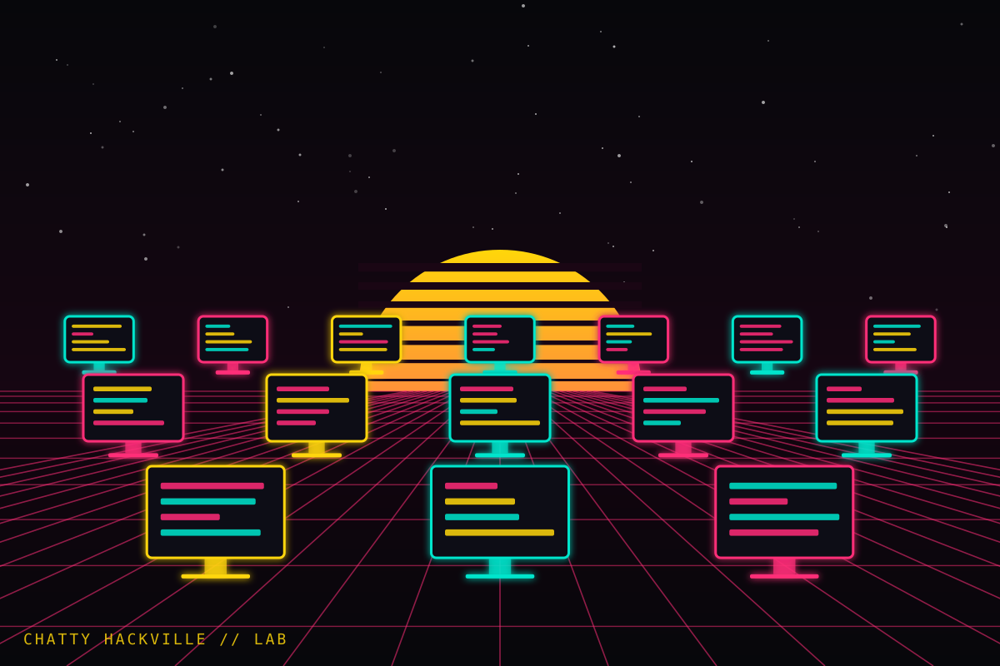
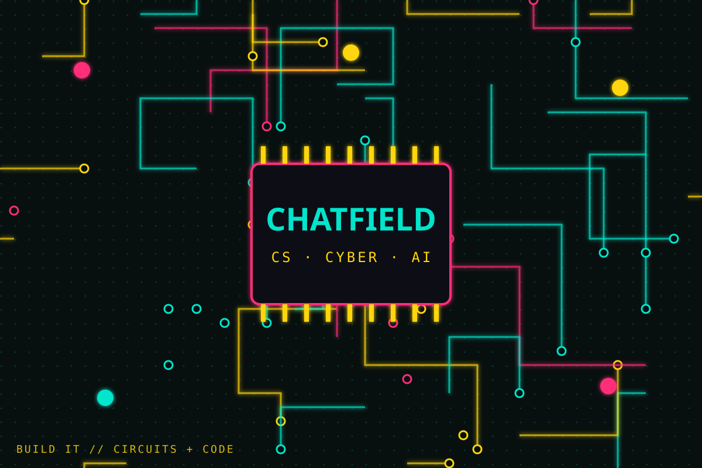

Labs every week
Build a network, follow a packet, fix what broke, on real switches.

Chatfield’s isolated cybersecurity lab. Students attack, defend, rebuild and do it again, on a network that exists for exactly that.


Build a network, follow a packet, fix what broke, on real switches.
Harden systems and investigate alerts on machines it is safe to attack.
Operating systems, file systems and a first taste of cyber challenges.
Test attacks like prompt injection on local models, never on someone else’s product.
Planned lab upgrades. Not finished yet.
Big screens showing the lab’s live network traffic beside a global attack map, so students can see what a security operations center sees.
One system collecting logs from both zones, so students can hunt for attacks the way analysts do.
Named attack-and-defend scenarios that run across the whole lab.
Chatfield’s CyberPatriot club competes in the national youth cyber defense competition run by the Air & Space Forces Association.
Meetings: Thursdays after school in room C200. New members welcome.
One ethics agreement covers the whole program: how we use the lab, cybersecurity ethics, AI ethics, coding ethics and work ethics. You learn what is legal and what is right before you touch the range.